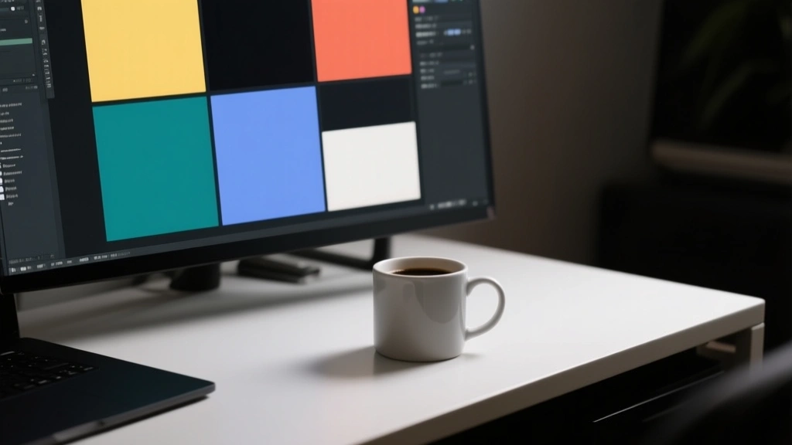

Uncover practical, battle-tested checks to avoid unreadable emails when readers switch to dark mode, including a rigorous testing playbook and a concrete 3-step checklist.
Dark mode is no longer a curiosity. It’s where a large portion of your audience actually reads — and where your reputation as a sender can hinge on tiny rendering glitches. This guide lays out a practical, journalist-style testing regimen and a punchy checklist you can export to your QA bench to reduce unintentional bias and improve inbox placement.
In 2026, dark mode isn’t a single style. It’s a spectrum: pure white on black, black text on light gray, and everything in between. The biggest pitfalls are contrast, image handling, and mimicry of system themes. If your content becomes illegible, your sender reputation can take a hit long before any open rate shows up.
Adopt a rigorous testing playbook that mirrors newsroom workflows: reproduce the user’s environment, verify every pixel, and document deviations with screenshots and references. Use a simple 5-point rubric for color, type, imagery, and accessibility.

There’s no universal dark mode. The only universal guardrail is safety-first rendering: avoid full-bleed white panels on dark mode, calibrate contrast ratios, and provide a readable fallback for images or icons that depend on light backgrounds.
Key checks you can implement today:
If an image looks washed out in dark mode, swap to a darker variant or convert the image to a two-tone silhouette so it remains legible on any background.
Unoptimized templates ignore dark-mode nuances, producing unreadable text and gray-on-gray images.
Adaptive color tokens, pixel-perfect testing, and a fallback rendering path ensure readability in all readers’ themes.
Dark mode isn’t a fashion trend. It’s a customer experience layer. Treat it with a newsroom-grade QA approach: plan, record, and iterate so readers see readable, accessible emails in any theme.